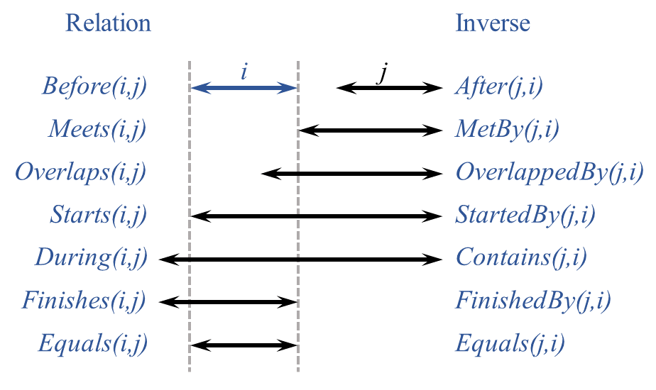
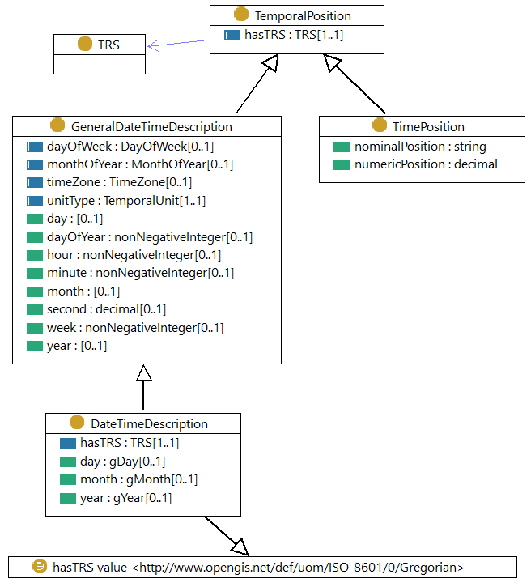
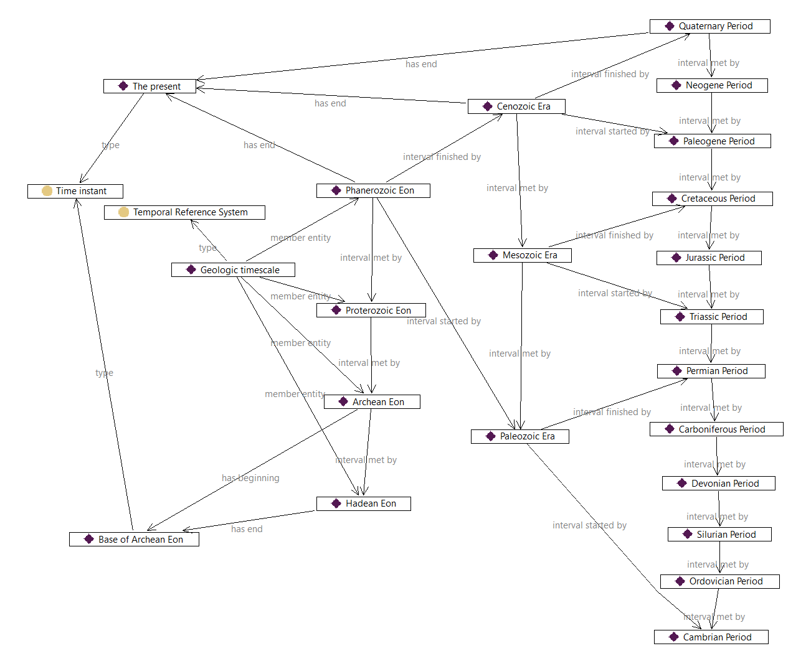

OWL-Time is an OWL-2 DL ontology of temporal concepts, for describing the temporal properties of
resources in the world or described in Web pages. The ontology provides a vocabulary for expressing facts about
topological (ordering) relations among instants and intervals, together with information about durations, and about
temporal position including date-time information. Time positions and durations may be expressed using either the conventional (Gregorian) calendar and clock, or using another temporal reference system such as Unix-time, geologic time, or different calendars.
The namespace for OWL-Time terms is http://www.w3.org/2006/time#
The suggested prefix for the OWL-Time namespace is time
An ontology of individuals for the Gregorian calendar (months) is available here.
Status of This Document
This section describes the status of this
document at the time of its publication. A list of current W3C
publications and the latest revision of this technical report can be found
in the W3C technical reports index at
https://www.w3.org/TR/.
For OGC - This is a Public Draft of a document prepared by the Spatial Data on the Web Working Group
(SDWWG)
— a joint W3C-OGC project (see charter).
The document is prepared following W3C conventions. Comments regarding this document are welcome - please submit them in the issue tracker. Recipients of this document are invited to submit, with their comments, notification of any relevant patent rights of which they are aware and to provide supporting documentation.
New classes and properties are introduced in this revision of OWL-Time. The new elements primarily relate to relaxing the limitation that time position uses only the Gregorian Calendar, and are placed in a logical hierarchy in relation to the original elements. While there is less implementation evidence for these than the elements from the 2006 version, the new elements are essential to satisfying key requirements in the revision.
However, a small number of other new elements merit additional explanation:
:hasXSDDuration allows use of the compact xsd:duration element to describe the extent of a temporal entity. This complements existing predicates used with XSD datatypes, and was an inexplicable omission from the original ontology.
:MonthOfYear and :monthOfYear complement :DayOfWeek and :dayOfWeek to support vernacular names for months as well as days.
:hasTime is a completely generic predicate for associating a temporal entity with anything. A number of generic predicates suitable for use directly in applications were requested, but in general were deemed undesirable in an ontology dealing with the description of time elements rather than their use. This one only was included for users unwilling or unable to define their own semantics.
Publication as a Candidate Recommendation does not
imply endorsement by W3C and its Members. A Candidate Recommendation Draft integrates
changes from the previous Candidate Recommendation that the Working Group
intends to include in a subsequent Candidate Recommendation Snapshot.
This is a draft document and may be updated, replaced or obsoleted by other
documents at any time. It is inappropriate to cite this document as other
than work in progress.
This document was produced by a group
operating under the
W3C Patent
Policy.
W3C maintains a
public list of any patent disclosures
made in connection with the deliverables of
the group; that page also includes
instructions for disclosing a patent. An individual who has actual
knowledge of a patent which the individual believes contains
Essential Claim(s)
must disclose the information in accordance with
section 6 of the W3C Patent Policy.
Temporal information is important in most real world applications.
For example, the date is always part of an online order.
When you rent a car it is for specific dates.
Events in the world occur at specific times and usually have a finite duration.
Transactions occur in a sequence, with the current state of a system depending on the exact history of all the transactions.
Knowledge of the temporal relationships between transactions, events, travel and orders is often critical.
OWL-Time has been developed in response to this need,
for describing the temporal properties of any resource denoted using a web identifier (URI),
including web-pages and real-world things if desired.
OWL-Time focusses particularly on temporal ordering relationships.
While these are implicit in all temporal descriptions, OWL-Time provides specific predicates to support, or to make explicit the results of, reasoning over the order or sequence of temporal entities.
There is a great deal of relevant existing work, some very closely related.
ISO 8601 [iso8601] provides a basis for encoding time position and extent in a character string, using the most common modern calendar-clock system.
Datatypes in XML Schema [xmlschema11-2] use a subset of the ISO 8601 format in order to pack multi-element values into a compact literal.
Functions and operators on durations, and on dates and times, encoded in these ways are available in XPath and XQuery [xpath-functions-31].
XSLT [xslt20] also provides formatting functions for times and dates, with explicit support for the specified language, calendar and country.
Some of the XML Schema datatypes are built-in to OWL2 [owl2-quick-reference], so the XPath and XQuery functions may be used on basic OWL data.
OWL-Time makes use of these encodings, but also provides representations in which the elements of a date and time are put into separately addressable resources, which can help with queries and reasoning applications.
OWL-Time also supports other representations of temporal position and duration, including temporal coordinates (scaled position on a continuous temporal axis) and ordinal times (named positions or periods).
This includes relaxing the expectation from the original version that dates must use the Gregorian calendar.
However, OWL-Time has a particular focus on ordering relations ("temporal topology"), which is not supported explicitly in any of the date-time encodings.
A first-order logic axiomatization of the core of this ontology is available in [hp-04].
This document presents the OWL encodings of the ontology, with some additions.
This version of OWL-Time was developed in the Spatial Data on the Web Working Group (a joint activity involving W3C and the Open Geospatial Consortium).
The ontology is based on the draft by Hobbs and Pan [owl-time-20060927], incorporating modifications proposed by Cox [co-15] to support more general temporal positions, along with other minor improvements.
The substantial changes are listed in the change-log.
The specification document has been completely re-written.
2. Notation and namespaces
Classes and properties from the Time Ontology are denoted in this specification using Compact URIs [curie].
The namespace for OWL-Time is http://www.w3.org/2006/time#. RDF representations of OWL-Time in various serializations are available at the namespace URI. OWL-Time does not re-use elements from any other vocabularies, but does use some built-in datatypes from OWL and some additional types from XML Schema Part 2.
The table below indicates the full list of namespaces and prefixes used in this document.
Examples and other code fragments are serialized using RDF 1.1 Turtle notation [turtle].
3. Principles and vocabulary overview
This section is non-normative.
3.1 Topological Temporal Relations
The basic structure of the ontology is based on an algebra of binary relations on intervals
(e.g., meets, overlaps, during) developed by Allen [al-84], [af-97] for
representing qualitative temporal information, and to address the problem of reasoning about such information.
The ontology starts with a class :TemporalEntity with properties :hasBeginning and :hasEnd that link to the temporal instants that define its limits, and :hasTemporalDuration to describe its extent.
There are two subclasses: :Interval
and :Instant, and they are the only two subclasses of :TemporalEntity.
Intervals are things with extent.
Instants are point-like in that they have no interior points, but it is generally safe to think of an instant as an interval with zero length, where the beginning and end are the same.
This idea - that time intervals are the more general case and time instants are just a limited specialization - is the first key contribution of Allen's analysis.
The class :Interval has one subclass :ProperInterval, which
corresponds with the common understanding of intervals, in that the beginning and end are distinct, and whose
membership is therefore disjoint from :Instant.
Relations between intervals are the critical logic provided by Allen's analysis, and implemented in the ontology.
Relations between intervals can be defined in a relatively straightforward fashion in terms of :before and identity on the beginning and end points.
The thirteen elementary relations shown below are the second key contribution of Allen's analysis.
These support unambiguous expression of all possible relations between temporal entities, which allows the computation of any relative position or sequence.
Note that the standard interval calculus assumes all intervals are proper, so their beginning and end are different.

Figure 2 Thirteen elementary possible relations between time periods [af-97].
Two additional relations: In (the union of During, Starts and Finishes) and Disjoint (the union of Before and After) are not shown in the figure but are included in the ontology.
The properties :hasTemporalDuration, :hasBeginning and :hasEnd, together with a fourth generic property :hasTime, support the association of temporal information with any temporal entity, such as an activity or event, or other entity.
These provide a standard way to attach time information to things, which may be used directly in applications if suitable, or specialized if needed.
3.2 Temporal reference systems, clocks, calendars
The duration of a TemporalEntity may be given using the datatype xsd:duration and the position of an Instant may be given using the datatype xsd:dateTimeStamp, which is built in to OWL 2 [owl2-syntax].
These both use the conventional notions of temporal periods (years, months, weeks ... seconds), the Gregorian calendar, and the 24-hour clock.
The lexical representations use [iso8601] style notation, but ignoring leap seconds, which are explicitly mandated by the international standard.
While this satisfies most web applications, many other calendars and temporal reference systems are used in particular cultural and scholarly contexts.
For example, the Julian calendar was used throughout Europe until the 16th century, and is still used for computing key dates in some orthodox Christian communities.
Lunisolar (e.g. Hebrew) and lunar (e.g. Islamic) calendars are currently in use in some communities, and many similar have been used historically.
Ancient Chinese calendars as well as the French revolutionary calendar used 10-day weeks.
In scientific and technical applications, Julian date counts the number of days since the beginning of 4713 BCE, and Loran-C, Unix and GPS time are based on seconds counted from a specified origin in 1958, 1970 and 1980, respectively, with GPS time represented using a pair of numbers for week number plus seconds into week.
Archaeological and geological applications use chronometric scales based on years counted backwards from ‘the present’ (defined as 1950 for radiocarbon dating [rc-14]), or using named periods associated with specified correlation markers ([cr-05], [cr-14], [mf-13]).
Dynastic calendars (counting years within eras defined by the reign of a monarch or dynasty) were used in many cultures. In order to support these more general applications, the representation of temporal position and duration must be flexible, and annotated with the temporal reference system in use.
A set of ordered intervals (e.g. named dynasties, geological periods, geomagnetic reversals, tree rings) can
make a simple form of temporal reference system that supports logical reasoning, known as an ordinal
temporal reference system [iso19108].
Measurement of duration needs a clock. In its most general form a clock is just a regularly
repeating physical event ('tick') and a counting mechanism for the 'ticks'. These counts may be used to
logically relate two events and to calculate a duration between the events.
A calendar is a set of algorithms that enables clock counts to be converted into practical
everyday dates and times related to the movement of astronomical bodies (day, month, year).
Note
As astronomically based calendars try to fit inconvenient durations into a usable regular system of counting cycles, 'intercalations' are often used to re-align the calendar's repeating patterns with astronomical events. These intercalations may be of different durations depending on the calendar, such as leap seconds, leap days, or even a group of days. Leap days are explicit and leap seconds implicit in the Gregorian calendar, which underlies the model used in several classes in OWL-Time. A general treatment of intercalations is beyond the scope of this ontology.
For many purposes it is convenient to make temporal calculations in terms of clock durations that exceed
everyday units such as days, weeks, months and years, using a representation of temporal position in a
temporal coordinate system [iso19108], or temporal coordinate reference system [iso-19111-2019], [ogc-topic-2],
i.e. on a number line with a specified origin, such as Julian date, or Unix time.
This may be converted to calendar units when necessary for human consumption.
Nevertheless, in practice much temporal information is not well-defined, in that there may be no clear
statement about the assumed underlying calendar and clock.
3.3 Time position
OWL 2 has two built-in datatypes relating to time: xsd:dateTime and xsd:dateTimeStamp [owl2-syntax]. Other XSD types such as xsd:date, xsd:gYear and xsd:gYearMonth [xmlschema11-2] are also commonly used in OWL applications.
These provide for a compact representation of time positions using the conventional Gregorian calendar and
24-hour clock, with timezone offset from UTC.
Four classes in the ontology support an explicit description of temporal position.
:TemporalPosition is the common super-class, with a property :hasTRS to indicate the temporal reference system in use.
:TimePosition has properties to alternatively describe the position using a number (i.e. a temporal coordinate), or a nominal value (e.g. geologic time period, dynastic name, archeological era).
:GeneralDateTimeDescription has a set of properties to specify a date-time using calendar and clock elements.
Its subclass :DateTimeDescription fixes the temporal reference system to the Gregorian calendar.

Figure 3 Classes for temporal position.
Following Allen's first key idea described above, even a time position has a finite extent, corresponding to the precision or temporal unit used. Thus, a :GeneralDateTimeDescription
or :DateTimeDescription has a duration corresponding to the value of its :unitType.
3.4 Duration
The duration of an interval (or temporal sequence) can have many different descriptions. An interval can be 1
day 2 hours, or 26 hours, or 1560 minutes, and so on. It is useful to be able to talk about these descriptions
in a convenient way as independent objects, and to talk about their equivalences. The extent of an interval can be
given using multiple duration descriptions or individual durations (e.g., 2 days, 48 hours) , but these must all describe the same amount of time.
Four classes support the description of the duration of an entity.
:TemporalDuration is the common super-class.
:Duration has properties to describe the duration using a scaled number (i.e. a temporal quantity).
:GeneralDurationDescription has a set of properties to specify a duration using calendar and clock elements, the definitions of which are given in the associated TRS description.
Its subclass :DurationDescription fixes the temporal reference system to the Gregorian calendar, so the :hasTRS property may be omitted on individuals from this class.
:TemporalUnit is a standard duration which is used to scale a length of time, and to capture its granularity or precision.
In this vocabulary specification, Manchester syntax [owl2-manchester-syntax] is used where the value of a field is not a simple term denoted by a URI or cURI.
RDF representations of OWL-Time are available at the vocabulary namespace URI - see Notation and namespaces.
Description of date and time structured with separate values for the various elements of a
calendar-clock system. The temporal reference system is fixed to Gregorian Calendar, and the range of
year, month, day properties restricted to corresponding XML Schema types xsd:gYear, xsd:gMonth and
xsd:gDay, respectively.
The class :DateTimeInterval is a subclass of :ProperInterval. It enables compact representation of an interval corresponding to a single element in a date-time description (i.e. a specified year, month, week, day, hour, minute, second).
The property :hasDateTimeDescription describes the interval.
Note
:DateTimeInterval can only be used for an interval whose limits coincide with a date-time element aligned to the calendar and timezone indicated.
For example, while both have a duration of one day, the 24-hour interval beginning at midnight at the beginning of 8 May in Central Europe can be expressed as a :DateTimeInterval, but the 24-hour interval starting at 1:30pm cannot.
Description of temporal extent structured with separate values for the various elements of a
calendar-clock system. The temporal reference system is fixed to Gregorian Calendar, and the range of
each of the numeric properties is restricted to xsd:decimal
In the Gregorian calendar the length of the month is not fixed. Therefore, a value like "2.5 months" cannot be exactly compared with a similar duration expressed in terms of weeks or days.
Two properties :timeZone, and :unitType, along with :hasTRS provide for reference information concerning the reference system and precision of temporal position values.
Six datatype properties :year, :month, :day, :hour, :minute,
:second, together with :timeZone support the description of
components of a temporal position in a calendar-clock system. These correspond with the 'seven property
model' described in ISO 8601 [iso8601] and XML Schema Definition Language Part 2:
Datatypes [xmlschema11-2], except that the calendar is not specified in advance, but is provided
through the value of the :hasTRS property (defined above).
Some combinations of properties are redundant. For example, within a specified :year if :dayOfYear is provided then :day and :month can be computed, and vice versa.
Individual values SHOULD be consistent with each other and the calendar, indicated through the value of the :hasTRS property.
Two additional properties :week and :dayOfYear allow for the numeric value of the week or day relative to the year.
The property :dayOfWeek provides the name of the day, and the property :monthOfYear provides the name of the month.
The property time:hasTRS indicates the temporal reference system applicable for the duration components.
Note
The extent of a time duration expressed as a GeneralDurationDescription depends on the Temporal Reference System. In some calendars the length of the week or month is not constant within the year. Therefore, a value like "2.5 months" may not necessarily be exactly compared with a similar duration expressed in terms of weeks or days. When non-earth-based calendars are considered even more care must be taken in comparing durations.
Membership of the class TemporalUnit is open, to allow for
other temporal units used in some technical applications (e.g. millions of years, Baha'i month).
Two properties :nominalPosition and :numericPosition support the alternative
descriptions of position or extent. One of these is expected to be present.
The temporal ordinal reference system should be provided as the value of the :hasTRS property
The temporal coordinate system should be provided as the value of the :hasTRS property
A Time Zone specifies the amount by which the local time is offset from UTC.
A time zone is usually denoted geographically (e.g. Australian Eastern Daylight Time), with a constant value in a given region.
The region where it applies and the offset from UTC are specified by a locally recognised governing authority.
Instance of:
owl:Class
No specific properties are provided for the class :TimeZone, the definition of which is beyond the
scope of this ontology. The class specified here is a stub, effectively the superclass of all time zone classes.
Note
An ontology for time zone descriptions was described in [owl-time-20060927] and provided as RDF in a separate namespace tzont:.
However, that ontology was incomplete in scope, and the example datasets were selective. Furthermore, since the use of a class from an external ontology as the range of an ObjectProperty in OWL-Time creates a dependency, reference to the time zone class has been replaced with the 'stub' class in the normative part of this version of OWL-Time.
Note
A designated timezone is associated with a geographic region. However, for a particular region the offset from UTC often varies seasonally, and the dates of the changes may vary from year to year. The timezone designation usually changes for the different seasons (e.g. Australian Eastern Standard Time vs. Australian Eastern Daylight Time). Furthermore, the offset for a timezone may change over longer timescales, though its designation might not.
Detailed guidance about working with time zones is given in [timezone].
A temporal reference system, such as a temporal coordinate reference system (with an origin, direction, and
scale), a calendar-clock combination, or a (possibly hierarchical) ordinal system.
Instance of:
owl:Class
No specific properties are provided for the class :TRS, the definition of which is beyond the
scope of this ontology. The class specified here is a stub, effectively the superclass of all temporal reference system types.
Note that an ordinal temporal reference system, such as the geologic timescale,
may be represented directly, using this ontology, as a set of :ProperIntervals, along with enough
inter-relationships to support the necessary ordering relationships. See example below of Geologic
Timescale.
Note
A taxonomy of temporal reference systems is provided in ISO 19108:2002 [iso19108],
including (a) calendar + clock systems; (b) temporal coordinate systems (i.e. numeric offset from an epoch);
(c) temporal ordinal reference systems (i.e. ordered sequence of named intervals, not necessarily of equal duration).
ISO 19111:2019 [iso-19111-2019] (also published as OGC Abstract Specification Topic 2 [ogc-topic-2]) provides a data model structure for temporal coordinate reference systems, conceptually equivalent to the temporal coordinate system of ISO 19108, in which the offset may be expressed as a dateTime, an integer or a real number. Annex D in that document provides examples of definitive and ambiguous calendar arithmetic.
The subject is a temporal entity that occurs after the object. If a temporal entity T1 is after another temporal
entity T2, then the beginning of T1 is after the end of T2.
The subject is a temporal entity that occurs before the object. If a temporal entity T1 is before another
temporal entity T2, then the end of T1 is before the beginning of T2.
Thus, before can be considered to be basic to instants and derived for intervals.
Day position in a calendar-clock system.
The range of this property is not specified, so can be replaced by any specific representation of a calendar day from any calendar.
Position and extent of time:DateTimeInterval expressed as a structured value.
The beginning and end of the interval coincide with the limits of the shortest element in the description.
If a proper interval T1 is intervalContains another proper interval T2,
then the beginning of T1 is before the beginning of T2, and the end of T1
is after the end of T2.
If a proper interval T1 is intervalDisjoint another proper interval T2,
then the beginning of T1 is after the end of T2, or the end of T1
is before the beginning of T2, i.e. the intervals do not overlap in any way, but their ordering relationship is not known.
If a proper interval T1 is intervalDuring another proper interval T2,
then the beginning of T1 is after the beginning of T2, and the end of T1
is before the end of T2.
If a proper interval T1 is intervalEquals another proper interval T2,
then the beginning of T1 is coincident with the beginning of T2, and the end of T1 is coincident with
the end of T2.
If a proper interval T1 is intervalFinishedBy another proper interval T2,
then the beginning of T1 is before the beginning of T2, and the end of T1
is coincident with the end of T2.
If a proper interval T1 is intervalFinishes another proper interval T2,
then the beginning of T1 is after the beginning of T2, and the end of T1
is coincident with the end of T2.
If a proper interval T1 is intervalIn another proper interval T2, then the beginning of T1 is after the beginning of T2 or is coincident with the beginning of T2, and the end of T1 is before the end of T2 or is coincident with the end of T2, except that end of T1 may not be coincident with the end of T2 if the beginning of T1 is coincident with the beginning of T2.
If a proper interval T1 is intervalOverlappedBy another proper interval T2,
then the beginning of T1 is after the beginning of T2, the beginning of T1
is before the end of T2, and the end of T1 is after the end of T2.
If a proper interval T1 is intervalOverlaps another proper interval T2,
then the beginning of T1 is before the beginning of T2, the end of T1
is after the beginning of T2, and the end of T1 is before the end of T2.
If a proper interval T1 is intervalStartedBy another proper interval T2,
then the beginning of T1 is coincident with the beginning of T2, and the end of T1 is
after the end of T2.
If a proper interval T1 is intervalStarts another proper interval T2,
then the beginning of T1 is coincident with the beginning of T2, and the end of T1 is
before the end of T2.
Month position in a calendar-clock system.
The range of this property is not specified, so can be replaced by any specific representation of a calendar month from any calendar.
IANA maintains a database of timezones. These are well maintained and generally considered authoritative, but individual items are not available at individual URIs, so cannot be used directly within data expressed using OWL-Time.
Weeks are numbered differently depending on the calendar in use and the local language or cultural conventions (locale). ISO-8601 specifies that the first week of the year includes at least four days, and that Monday is the first day of the week. In that system, week 1 is the week that contains the first Thursday in the year.
Value of time:DateTimeInterval expressed as a compact value. The beginning and end of the interval coincide with the limits of the smallest non-zero element of the value.
Using xsd:dateTime in this place means that the duration of the interval is implicit: it corresponds to the length of the smallest non-zero element of the date-time literal. However, this rule cannot be used for intervals whose duration is more than one rank smaller than the starting time - e.g. the first minute or second of a day, the first hour of a month, or the first day of a year. In these cases the desired interval cannot be distinguished from the interval corresponding to the next rank up. Because of this essential ambiguity, use of this property is not recommended and it is deprecated.
Year position in a calendar-clock system.
The range of this property is not specified, so can be replaced by any specific representation of a calendar year from any calendar.
Day of month - formulated as a text string with a pattern constraint to reproduce the same lexical form as xsd:gDay,
except that values up to 99 are permitted, in order to support calendars with more than 31 days in a month.
Note that the value-space is not defined, so a generic OWL2 processor cannot compute ordering relationships of values of this type.
Month of year - formulated as a text string with a pattern constraint to reproduce the same lexical form as xsd:gMonth,
except that values up to 20 are permitted, in order to support calendars with more than 12 months in the year.
Note that the value-space is not defined, so a generic OWL2 processor cannot compute ordering relationships of values of this type.
Year number - formulated as a text string with a pattern constraint to reproduce the same lexical form as xsd:gYear, but not restricted to values from the Gregorian calendar.
Note that the value-space is not defined, so a generic OWL2 processor cannot compute ordering relationships of values of this type.
The following example illustrates the difference between using :DateTimeDescription and using
the XML datatype xsd:dateTimeStamp. An instant that represents the start of a meeting, called ex:meetingStart,
happens at 10:30am AEST on 12 Apr 2017 can be expressed using both :inXSDDateTimeStamp and :inDateTime
in OWL as:
It is much more concise to use the XML Schema datatype xsd:dateTimeStamp.
However, using :DateTimeDescription more information can be included directly in a message, such as the "week", "day of week" and "day of year".
In the example we can also see that 12/04/2017 is a Wednesday, the month is April, it is the 102nd day of the year, and in the 15th week of the year.
Since each field of :DateTimeDescription is separate no computation is required to get the values of these fields for use in reasoning.
However, since some calendars, such as religious observationally-based ones, cannot be algorithmically calculated explicit assertion of values for elements of the calendar is required.
The :timeZone property points to a definition of Australian Eastern Standard Time.
5.2 Use of temporal reference systems
The use of different temporal reference systems for the same absolute time is illustrated in the following
examples. Abby's birthday is an :Instant whose position may be expressed using the conventional
XSD xsd:dateTimeStamp type as 2001-05-23T08:20:00+08:00:
The :TimePosition class may be used to express the same position in Unix time (also known as Posix time or Epoch time) (i.e.
the number of seconds since the beginning of 1st January 1970):
ex:AbbyBirthdayUnix
a :TimePosition ;
:hasTRS <http://dbpedia.org/resource/Unix_time> ;
:numericPosition 990577200 ;
rdfs:label "Abby's birthdate in Unix time"^^xsd:string ;
.
Each of these examples refers to either a temporal reference system or time zone described externally, using its URI. RDF representations are available from DBPedia (e.g. http://dbpedia.org/resource/Unix_time) though these do not have specific time semantics.
Similar to the way that :DateTimeDescription is a derived from :GeneralDateTimeDescription by fixing the :TRS to the Gregorian system, a specialized class UnixTime may be derived from :TimePosition by fixing the value of its reference system to the Unix time system:
The RDF representation of this example is available here.
5.3 Temporal precision
For the purposes of radiocarbon dating (which is the technique used in geological age determination for
materials up to around 60,000 years old) 'the Present' is conventionally fixed at 1950 [rc-14].
This can be described as an individual :Instant, with its position expressed using any of the
three alternatives:
geol:Present
a :Instant ;
:inDateTime [
a :DateTimeDescription ;
:unitType :unitYear ;
:year "1950"^^xsd:gYear ;
] ;
:inTimePosition [
a :TimePosition ;
:hasTRS <http://www.opengis.net/def/crs/OGC/0/ChronometricGeologicTime> ;
:numericPosition 0.0 ;
] ;
:inXSDDateTimeStamp "1950-01-01T00:00:00Z"^^xsd:dateTimeStamp ;
rdfs:label "The present"^^xsd:string ;
.
Expressed using :DateTimeDescription the :unitType
- which determines the precision -
is set to :unitYear, and only the :year element is provided in the value.
The TRS value is not provided explicitly, as it is fixed in the ontology description to http://www.opengis.net/def/uom/ISO-8601/0/Gregorian.
In the :TimePosition variant, the TRS is given as
http://www.opengis.net/def/crs/OGC/0/ChronometricGeologicTime
which has units of millions of years, starting from the present, positive backwards.
For the value expressed using xsd:dateTimeStamp the
position within the year is set arbitrarily to midnight at the beginning of 1st January.
This level of precision in this case is spurious, but is required to satisfy the lexical pattern of the datatype.
Since the :numericPosition, :second properties have the datatype of xsd:decimal, the position of a :Instant or the duration of a :TemporalEntity may be represented with a precision of fractions of seconds if required. For example, a database timestamp with a precision of milliseconds can be expressed as follows:
ex:GPSTime
rdf:type owl:Class ;
rdfs:comment "GPS Time is the number of seconds since an epoch in 1980, encoded as the number of weeks + seconds into the week" ;
rdfs:subClassOf time:GeneralDateTimeDescription ;
rdfs:subClassOf [ a owl:Restriction ;
owl:cardinality "0"^^xsd:nonNegativeInteger ;
owl:onProperty :day ; ] ;
rdfs:subClassOf [ a owl:Restriction ;
owl:cardinality "0"^^xsd:nonNegativeInteger ;
owl:onProperty :dayOfWeek ; ] ;
rdfs:subClassOf [ a owl:Restriction ;
owl:cardinality "0"^^xsd:nonNegativeInteger ;
owl:onProperty :dayOfYear ; ] ;
rdfs:subClassOf [ a owl:Restriction ;
owl:cardinality "0"^^xsd:nonNegativeInteger ;
owl:onProperty :hour ; ] ;
rdfs:subClassOf [ a owl:Restriction ;
owl:cardinality "0"^^xsd:nonNegativeInteger ;
owl:onProperty :minute ; ] ;
rdfs:subClassOf [ a owl:Restriction ;
owl:cardinality "0"^^xsd:nonNegativeInteger ;
owl:onProperty :month ; ] ;
rdfs:subClassOf [ a owl:Restriction ;
owl:cardinality "0"^^xsd:nonNegativeInteger ;
owl:onProperty :monthOfYear ; ] ;
rdfs:subClassOf [ a owl:Restriction ;
owl:cardinality "0"^^xsd:nonNegativeInteger ;
owl:onProperty :timeZone ; ] ;
rdfs:subClassOf [ a owl:Restriction ;
owl:cardinality "0"^^xsd:nonNegativeInteger ;
owl:onProperty :year ; ] ;
rdfs:subClassOf [ a owl:Restriction ;
owl:cardinality "1"^^xsd:nonNegativeInteger ;
owl:onProperty :second ; ] ;
rdfs:subClassOf [ a owl:Restriction ;
owl:cardinality "1"^^xsd:nonNegativeInteger ;
owl:onProperty :week ; ] ;
rdfs:subClassOf [ a owl:Restriction ;
owl:hasValue :unitSecond ;
owl:onProperty :unitType ; ] ;
rdfs:subClassOf [ a owl:Restriction ;
owl:hasValue <https://en.wikipedia.org/wiki/Global_Positioning_System#Timekeeping> ;
owl:onProperty :hasTRS ; ] ;
.
5.4 iCalendar
iCalendar [rfc5545] is a widely supported standard for personal data interchange. It provides
the definition of a common format for openly exchanging calendaring and scheduling information across the
Internet. The representation of temporal concepts in this time ontology can be straightforwardly mapped to
iCalendar. For example, duration of 15 days, 5 hours and 20 seconds is represented in iCalendar as P15DT5H0M20S,
which can be represented in the time ontology as:
The iCalendar homepage features the example of Abraham Lincoln's birthday as celebrated in 2008.
This may be represented in multiple ways using OWL-Time, including the following.
In this formulation, the length of the entity is explicit, as the value of the :hasDuration property.
Several other formulations are possible, some of which are shown in the RDF representation is available here.
5.5 Geologic timescale
The geologic timescale is defined as a set of named intervals arranged in a hierarchy, such that there is
only one subdivision of the intervals of each rank (e.g. 'Era') by a set of intervals of the next rank (in
this case 'Period') [cr-05]. Since the relative ordering is well-defined this graph can
therefore serve as an ordinal temporal reference system. Fig. 5 shows how the geologic timescale can be
expressed as a set of :ProperIntervals related to each other using only :intervalMetBy, :intervalStartedBy,
:intervalFinishedBy. Many other interval relationships follow logically from the ones shown (for
example 'Neogene Period' :intervalDuring 'Cenozoic Era') but the ones shown are sufficient to describe
the full topology.

Figure 5 Part of the geologic timescale formalized as ProperIntervals, with ordering relationships
described using the predicates defined in this ontology.
For example, the 'Archean Eon' is a :ProperInterval described as follows:
Note that the position of this :Instant is specified using a :TimePosition, which
is a numeric value relative to the temporal coordinate system indicated as the value of the :hasTRS property.
Suppose someone has a telecon scheduled for 6:00pm EST on November 5, 2006. You would like to
make an appointment with him for 2:00pm PST on the same day, and expect the meeting to last 45 minutes.
Will there be an overlap?
In this use case we can specify the facts about the telecon and the meeting using our ontology in OWL that
will allow a temporal reasoner to determine whether there is a conflict:
ex:telecon
a :Interval ;
:hasBeginning ex:teleconStart .
ex:meeting
a :Interval ;
:hasBeginning ex:meetingStart ;
:hasDurationDescription ex:meetingDuration .
ex:teleconStart
a :Instant ;
:inXSDDateTimeStamp "2006-11-05T18:00:00-5:00"^^xsd:dateTimeStamp .
ex:meetingStart
a :Instant ;
:inXSDDateTimeStamp "2006-11-05T14:00:00-8:00"^^xsd:dateTimeStamp .
ex:meetingDuration
a :DurationDescription ;
:minutes 45 .
The telecon and the meeting are defined as intervals. :hasBeginning is used for specifying the
start times of the meetings. The datetimes are specified using :inXSDDateTimeStamp. The duration of
the meeting is specified using the :DurationDescription class.
5.7 Alignment of PROV-O with OWL-Time
PROV is a process-flow model. The base class Activity denotes things that occur over a period of time, and act upon or with entities. Activities are ordered within a provenance trace. Thus, an alignment with OWL-Time is natural.
However, the Activity start and end properties require a property chain axiom, because the beginning and end of a :TemporalEntity are :Instants rather than compact xsd:dateTimes.
refers to a resource associated with a time interval that begins after the beginning of the time interval associated with the context resource, and ends before the end of the time interval associated with the context resource
refers to a resource associated with a time interval that begins after the end of the time interval associated with the context resource, or ends before the beginning of the time interval associated with the context resource
refers to a resource associated with a time interval that begins before the beginning of the time interval associated with the context resource, and ends after the end of the time interval associated with the context resource
refers to a resource associated with a time interval whose beginning coincides with the beginning of the time interval associated with the context resource, and whose end coincides with the end of the time interval associated with the context resource
refers to a resource associated with a time interval that begins after the beginning of the time interval associated with the context resource, and whose end coincides with the end of the time interval associated with the context resource
refers to a resource associated with a time interval that begins before the beginning of the time interval associated with the context resource, and whose end coincides with the end of the time interval associated with the context resource
refers to a resource associated with a time interval that begins before or is coincident with the beginning of the time interval associated with the context resource, and ends after or is coincident with the end of the time interval associated with the context resource
refers to a resource associated with a time interval that begins before the beginning of the time interval associated with the context resource, and ends after the beginning of the time interval associated with the context resource
refers to a resource associated with a time interval that begins before the end of the time interval associated with the context resource, and ends after the end of the time interval associated with the context resource
refers to a resource associated with a time interval whose beginning coincides with the beginning of the time interval associated with the context resource, and ends before the end of the time interval associated with the context resource
refers to a resource associated with a time interval whose beginning coincides with the beginning of the time interval associated with the context resource, and ends after the end of the time interval associated with the context resource
OWL-Time supports the representation of temporal entities and relations within applications that require these concepts.
Implementations that produce, maintain, publish or consume temporal information using OWL-Time must take steps to ensure security and privacy considerations are addressed at the application level.
A. Summary of Classes and Properties in the Time Ontology
Items in italics were added in the 2017 revision of OWL-Time and are not yet widely used. These may be considered features at risk.
OWL-Time has been put into use in a large number of applications. Some of these are summarized here.
C. Changes from previous versions
This version of OWL-Time was developed in the Spatial Data on the Web Working Group
(a joint activity involving W3C and the Open Geospatial Consortium).
The Ontology is derived from the one described in the 2006 Draft [owl-time-20060927] though the document has been completely re-written.
C.1 2021 update
clarifications to the textual definitions of :after and :before
:GeneralDateTimeDescription and :GeneralDurationDescription are generalizations of the corresponding classes from the 2006 draft, for cases which the temporal reference system is not fixed to the Gregorian Calendar in advance
the property :hasTRS enables time values to be associated with a temporal reference system, represented by a new ('stub') class :TRS
:TimePosition and :Duration are new classes to enable position or duration to be described using a number or nominal value
deprecate the property :xsdDateTime deprecated as used on :DateTimeInterval - difficult/ambiguous encoding
:Year deprecated
:January deprecated
:MonthOfYear class and :monthOfYear property added. greg:January-greg:December instances added in a separate graph and namespace.
the time-zone ontology presented in the 2006 draft has been removed. A new class :TimeZone in the main namespace is used instead. The new class is a 'stub' with no properties, to serve as a superclass for any implementation
added data-type property time:hasXSDDuration with domain :TemporalEntity and range xsd:duration
5.51 Time series: out of scope for OWL-Time which is concerned with the representation of the temporal aspects only. Coverages in Linked Data provides some support
5.39 Space-time multi-scale: OWL-Time supports the representation of the temporal properties of things, so may be used as a component of an integrated solution, but the latter is out of scope for this document.
5.22 4D model of space-time: OWL-Time supports the representation of time that may be used in 4D applications. In particular the classes time:Duration and time:TimePosition support descriptions of time duration as a scaled number, and time position as a time coordinate.
5.32 Provenance: individuals from classes in the time:TemporalEntity hierarchy may be used in the description of activities involved in provenance traces. prov:Activity could itself be modelled as an rdfs:subClassOf of time:TemporalEntity. Allen's interval algebra described in topology can support the description of temporal relationships between activities in a provenance trace. However, these applications have not been explicitly modelled in this document.
5.25 Multilingual support: all labels and other annotations in the ontology have correct language tags. Individuals from the classes time:DayOfWeek and time:MonthOfYear have labels in several languages in the RDF artefacts.